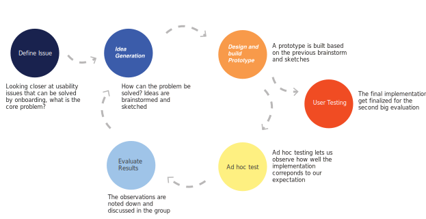

Server and DB technologies
Virtual reality application development in Unity, C# / Monobehaviour API
ViRMA (Virtual Reality Multimedia Analytics) is a a Virtual Reality multimedia analytics tool that utilizes the possibilities of VR. It has evolved in response to the growing demand for storing and navigating through large collections of multimedia. During my Master project I have been working in a group of three on implementing onboarding features in ViRMA in order to make the application accessible towards novice users.
In its initial state ViRMA has not yet addressed the issues of a potential broader user base of VR which includes novice users. Consequently, we investigated the following: What usability challenges does ViRMA face, and how can the ones related to learnability be mitigated through onboarding of novice users?
The aim of this project has been to first and foremost identify what usability challenges ViRMA faces. This has been addressed through a preliminary usability test on novice users combined with an autoethnographical study. We identified key usability issues which we ranked by their severity, persistency and frequency. Following the preliminary usability test, we compared an array of solutions to these usability issues within a Time Value Matrix based on their estimated development time and their potential added value to the usability of ViRMA. This process resulted in our determination to improve the system’s learnability through onboarding features and controller details.
To asses whether our implementations in ViRMA were effective and therefore onboarding users in ViRMA was in fact beneficial to the system’s usability, we conducted A/B testing. Even though the results of the test indicate a general improvement in usability, some implementations seem to only marginally contribute to this improvement. From our analysis, we concluded that 3/4 implemented features can be considered beneficial to the usability of ViRMA. The 3 features that proved helpful were the Welcome Tutorial, the Controller Details and the Magnifier, while the Pocket Guide was hard to locate and not useful in most scenarios.
Virtual reality application development in Unity, C# / Monobehaviour API